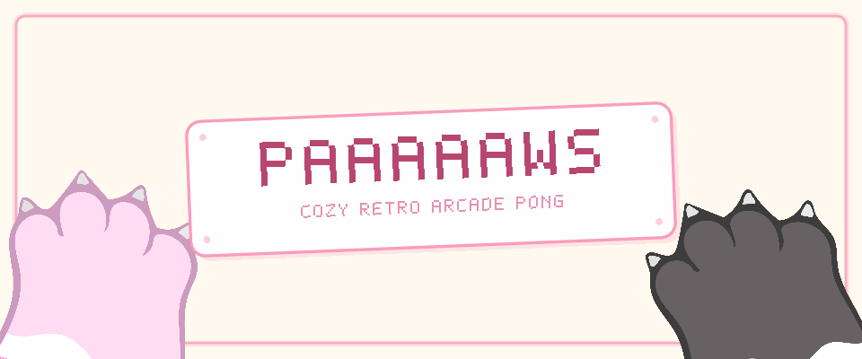
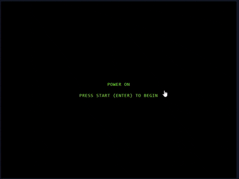
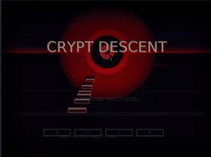
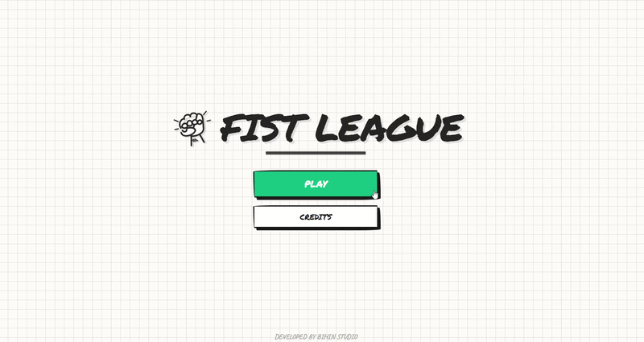

PAAAAAWS
↗A cozy retro arcade take on single player Pong and Breakout built with the LÖVE framework. Released for Windows and Linux.
Lua
LÖVE 2D
Arcade
Windows/Linux
Hi, I'm Adi. I'm a developer and researcher who likes building things.
Most of my time is spent across indie game development, research, and systems engineering. Through BIHIN STUDIOS, a small student team, we build indie games, prototype gameplay systems, and take on web design work. On the research side, I've contributed to projects like Drishtikon, TVCs, and MACE. When I'm not working on higher-level tools, I enjoy writing game mechanics in C, Lua, and GDScript and building small utility tools for Linux and Windows.
Currently, I’m an undergraduate studying Computer Science and Engineering at BRAC University, steadily working toward thesis research and hoping to graduate in late 2028.
I also picked up light full-stack and web development whenever a project calls for it.
Selected works in my projects

A cozy retro arcade take on single player Pong and Breakout built with the LÖVE framework. Released for Windows and Linux.

A psychological stealth survival prototype built under retro NES architectural constraints, driven by spatial sonar ping navigation and hostile anomaly avoidance.

A precision rhythm action title featuring mechanical lane-based input timing, mechanical level select routines, and a custom build compiled for Linux.

A web based arcade brawler game with custom hand-drawn canvas art styles, combat state machines, and instant browser deployment on Netlify.